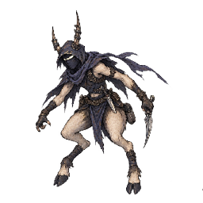
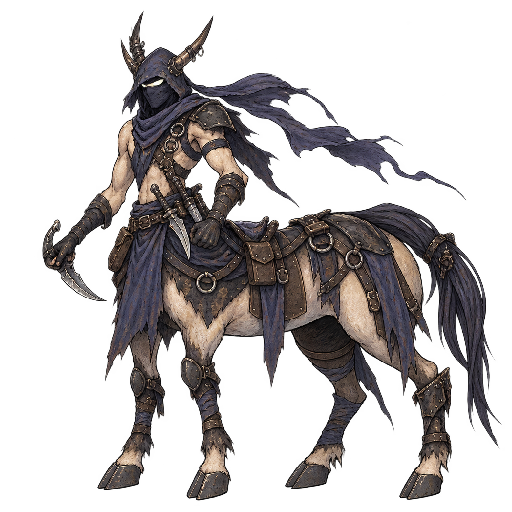

でんき
- 捕獲率
- 45
- 経験値
- 20
進化
進化元
 Yellow Mouseレベル進化
Yellow Mouseレベル進化覚える技
| 習得 | 技 | タイプ | 威力 | 命中 | PP | 分類 |
|---|---|---|---|---|---|---|
| Lv.1 | Scratch | ノーマル | 40 | 100 | 35 | 物理 |
| Lv.2 | Spark | でんき | 40 | 100 | 25 | 特殊 |
| Lv.3 | Static Electricity | でんき | 0 | 90 | 15 | 変化 |
| Lv.4 | Strong Shock | でんき | 70 | 80 | 15 | 特殊 |
| Lv.5 | Shocking Fist | でんき | 75 | 100 | 15 | 物理 |
| Lv.7 | Numbing Wave | でんき | 0 | 90 | 20 | 変化 |
| Lv.9 | Huge Thunder | でんき | 110 | 70 | 10 | 特殊 |
| Lv.10 | Very Strong Beam | ノーマル | 150 | 90 | 5 | 特殊 |
カウンターできる相手
 Armored Turtleタイプ一致の弱点攻撃
Armored Turtleタイプ一致の弱点攻撃Huge Thunder（でんき）で弱点2倍（ほか3件）
 Blue Turtleタイプ一致の弱点攻撃
Blue Turtleタイプ一致の弱点攻撃Huge Thunder（でんき）で弱点2倍（ほか3件）
 Normal Pidgeonタイプ一致の弱点攻撃
Normal Pidgeonタイプ一致の弱点攻撃Huge Thunder（でんき）で弱点2倍（ほか3件）
 Stately Pidgeonタイプ一致の弱点攻撃
Stately Pidgeonタイプ一致の弱点攻撃Huge Thunder（でんき）で弱点2倍（ほか3件）
 Torrent Turtleタイプ一致の弱点攻撃
Torrent Turtleタイプ一致の弱点攻撃Huge Thunder（でんき）で弱点2倍（ほか3件）
 カピバロンタイプ一致の弱点攻撃
カピバロンタイプ一致の弱点攻撃Huge Thunder（でんき）で弱点2倍（ほか3件）
 カピータイプ一致の弱点攻撃
カピータイプ一致の弱点攻撃Huge Thunder（でんき）で弱点2倍（ほか3件）

ケンタルンタイプ一致の弱点攻撃Huge Thunder（でんき）で弱点2倍（ほか3件）

サジタウルタイプ一致の弱点攻撃Huge Thunder（でんき）で弱点2倍（ほか3件）
カウンターされる相手
 Dirt Burrowerタイプ一致の弱点攻撃
Dirt Burrowerタイプ一致の弱点攻撃Shake Ground（じめん）で弱点2倍（ほか2件）
 Rock Armor弱点を突ける技
Rock Armor弱点を突ける技Bone Smack（じめん）で弱点2倍
変更履歴
sha256:ecbc3effb…現在日本語名変更
sha256:63946e9a2…初回記録